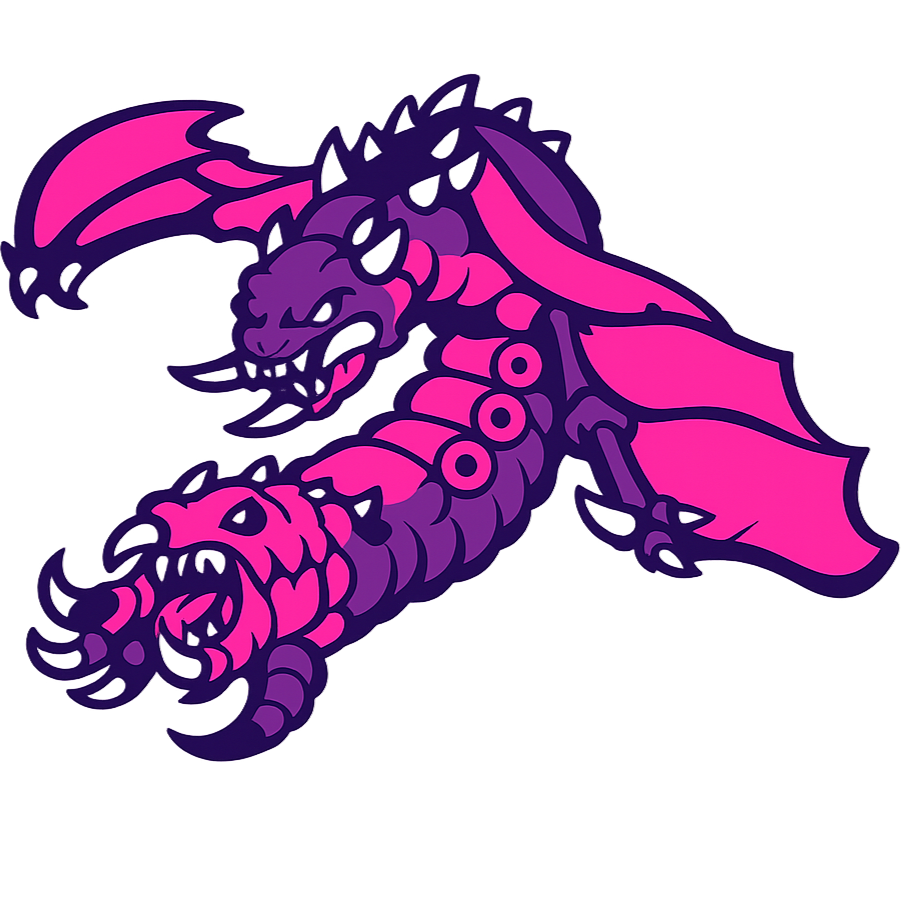

Build
dotnet build MutaliskGH\MutaliskGH.csproj -f net48Grasshopper Plugin

A focused Grasshopper toolset for high-utility production work across text processing, tree logic, formatting, display, geometry, Rhino interaction, and Rhino.Inside.Revit.
Current Scope
Mutalisk Grasshopper tabBuild
dotnet build MutaliskGH\MutaliskGH.csproj -f net48Test
dotnet test MutaliskGH.Tests\MutaliskGH.Tests.csprojProduct Surface
Highlights
PaletteEngine, Color by Branch, and
Preview Color by Value share the same seed-driven color logic for stable,
repeatable viewport communication.
Components such as RegEx Cull, Branch by Member, and
Cull ENF support zoomable || lane expansion for multi-stream use.
The geometry family includes point rounding, rectangle evaluation, orientation analysis, offset selection, and extension-trim logic tuned for practical modeling workflows.
MutaliskGH includes native Rhino helpers as well as Rhino.Inside.Revit query and automation components for mixed-environment projects.
Side-effect tools such as rename, zoom, and export operations are gated behind explicit trigger inputs so they behave like deliberate actions instead of passive solve-time effects.
Core behavior lives in MutaliskGH.Core, making the plugin easier to test,
maintain, and extend without depending on Grasshopper solve state for every change.
Structure
Grasshopper wrappers, icons, UI behavior, and viewport-preview integration.
Reusable logic for text, data trees, formatting, display, geometry, Rhino, and Revit helpers.
Fast regression coverage for behavior that should stay stable across component updates.
References